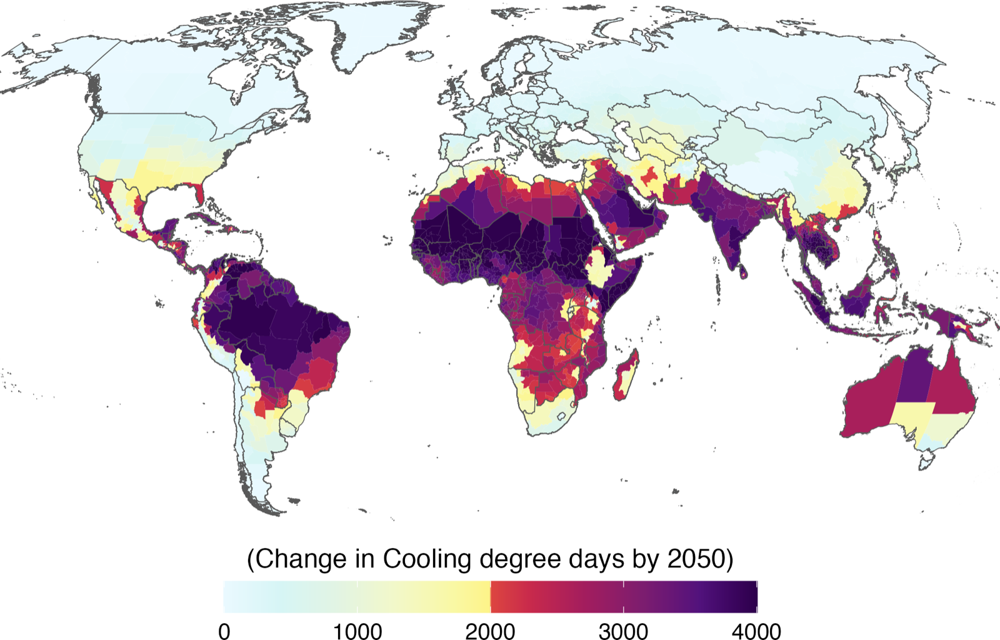

The Changing Landscape of International Development
Introduction to the Handbook of Development Economics, Volume 6
- Pascaline Dupas Princeton University
- Pinelopi Goldberg Yale University
- Rohini Pande Yale University
November 2026
Slides and figures by Nils Enevoldsen, Yale University
Development economics research has expanded dramatically
- Nearly every field of economics now studies questions central to poorer countries
- The volume covers themes with large new literatures, central to policy debates
- The boom coincided with real progress on core dimensions of development
Questions that run through the volume
Major gains, serious challenges: where we stand since 1989
- What stands in the way of continued progress?
Geography, poverty traps, conflict, weak states, trade - Where will future growth come from?
Technology adoption and services; using resources well - How can growth be broadly shared?
Jobs, learning, and women's work have lagged growth
Reflections: lessons on policy and institutions
Conclusion: open questions
Major gains, serious challenges
Extreme poverty has fallen dramatically, but not everywhere
- An undeniable success story: first East Asia, led by China; then, this century, South Asia, led by India
- In sub-Saharan Africa and in the Middle East, North Africa, and Afghanistan, poverty is entrenched and may even rise
Health has improved at every level of income
- Countries did not just move along the curve as they got richer: the whole curve shifted up
- The shift reflects technology (vaccines, antibiotics, antivirals) that improves health at any income
- Gains were largest in low-income countries
Children are far more likely to survive
- Poverty reduction has gone hand in hand with broader gains in human development
- Child mortality fell even where poverty fell least, a sign that health technology reached poor countries
Citizens have gained voice and rights
- After the Cold War, electoral democracy became the dominant form of government in rich and poor countries
- Legal rights expanded for marginalized groups, especially women: in the workplace, in mobility, in marriage
Social protection now reaches most people in developing countries
- Growth and a stronger citizen voice together drove a dramatic expansion of social assistance
- Policymakers' beliefs are now more aligned with economists' views on how to target, but not on impacts
Progress against poverty has slowed
- After Covid-19 briefly reversed it, poverty reduction resumed, but far more slowly
- Entrenched poverty in sub-Saharan Africa and MENA revives the question of poverty traps
- More frequent shocks push the recently escaped back into poverty
The conditions behind past progress are eroding
| Peace | Armed conflict is at a sustained peak | |
|---|---|---|
| Climate | Warming hits the tropics hardest | |
| Technology | Automation and AI threaten low-skill advantage | |
| Markets | Protectionism and backlash against openness | |
| Global order | Rivalry and policy uncertainty deter investment | |
| Aid | Rich countries are scaling back | |
| Governance | Institutions are less responsive to citizens |
Armed conflict is at a sustained peak
- Today's conflicts are mostly within states, concentrated in Africa and Asia
- They disrupt markets, deter investment, displace people, and divert public spending
- Where poverty, climate risk, and weak states coincide, conflict locks in low growth
Climate change falls hardest on those least able to cope

- Warming hits the already-hot tropics hardest, where most of the poor live
- Neither self-help adaptation nor informal regulation has protected people so far
- Costs include income, health, and mortality
- Does today's growth cost tomorrow's?
Behind the backlash: who gained from globalization
- Global inequality fell as the poor gained, but rich-country middle classes gained least
- The sense that the bottom and top gained at the middle's expense fueled a backlash against openness
- That backlash threatens growth in poor and rich countries alike
Rich countries are sharply cutting aid
- After two decades of growth, aid fell in 2024 and collapsed in 2025
- Poor countries must increasingly depend on their own resources
Governance institutions are becoming less responsive to citizens
- Responsive governments buffer these shocks, but that buffer is weakening
- Democratic institutions are eroding in rich and poor countries alike, fastest where they were weakest
- Outside the OECD, state capacity is falling too
Three critical questions
Three critical questions
- What stands in the way of continued progress?
Geography, poverty traps, conflict, weak states, trade - Where will future growth come from?
Technology adoption and services; using resources well - How can growth be broadly shared?
Jobs, learning, and women's work have lagged growth
Q1. What stands in the way of continued progress?
- Geography: not destiny, but it makes development costlier, especially in sub-Saharan Africa
- Poverty traps: entrenched poverty may perpetuate itself, through poor health, missing credit, or behavioral biases
- Conflict: concentrated in Africa and Asia, it locks in low growth where states are weak
Two barriers in more detail:
- Weak states: sub-Saharan Africa is overrepresented among the lowest-capacity and least accountable states
- Trade: the path that enabled East Asia is narrowing
Capable, accountable states underpin markets and people
- Markets and people operate within political institutions that can enable or constrain development
- Sub-Saharan Africa has seen democratic stagnation more than backsliding, and very limited gains in state capacity
- Much of today's conflict is within states, with governments as central actors
- Sustained development needs states that provide security, public goods, and accountability, alongside fixing distortions and investing in people
The trade path that enabled East Asia is narrowing for Africa
| East Asia, then | Sub-Saharan Africa, now | |
|---|---|---|
| Scale | Access to large rich-country markets | High transport costs and weak infrastructure limit integration |
| Upgrading | Skills and technology through FDI and value chains | Largely outside value chains; where inside, mostly agriculture, with weaker spillovers |
| Policy credibility | Trade agreements anchored stable, predictable policy | Early members of trade agreements, but markets stayed poorly integrated |
Now protectionism, and firms pulling out of countries seen as risky, narrow the path just when Africa needs it
Q2. Where will future growth come from?
No definitive answer, but two candidate engines, each with caveats
Technology adoption, not frontier innovation
- Held back by weak institutions, financial constraints, scarce skills, ill-suited technologies
- Trade was one way countries overcame these
- Open: which technologies, from farm inputs to AI, will diffuse, and with what effects?
Services: growth in East and West Africa and India is service-led, not service-biased
- Productivity is rising within consumer services
- But growth is slower than under industrialization
- Open: do services deliver manufacturing's spillovers?
In a slower world, using existing resources well matters more
- Poorer economies suffer more “wedges” that misallocate resources: across firms, in health and education markets, through environmental damage, and through gender discrimination
- Open question: how much do these distortions cost aggregate productivity?
- In fast growth, the priority is sustaining it; in a slower, less certain world, using existing resources well becomes central
- With less aid and market access, countries must rely on their own resources, at the risk of a low-demand trap
Q3. How can growth be broadly shared?
- Most poor now live in middle-income countries
- Rapid growth often raised inequality
- Within-country poverty is concentrated in rural areas with low farm productivity
- Service-led growth favors cities, and the urban rich
Growth has not brought better jobs
- Two decades of growth have barely dented informality
- Informal jobs lack benefits, stability, and protection: job quality is its own problem
- Formalization could itself raise productivity, one possible engine of service-led growth
Schooling has expanded at every level of income
- As with health, schooling shifted up at every income level, driven largely by compulsory schooling laws
- The expansion of education may account for nearly half of global growth since 1980
Literacy has risen at every level of income
- Countries today are far more literate than countries at the same income were in the 1950s
- As with health and schooling, progress has not waited for countries to grow rich
More schooling has not meant more learning
- The binding constraint is now quality, not access
- Families often have choices, but quality varies widely and is hard for parents to observe
- With little evidence on which skills AI-era jobs will need, foundational skills are the safer bet
Women's talent remains underused
- Schooling gaps have closed, and even reversed in some countries, yet women remain underrepresented in the labor force and in good jobs, and overrepresented in informal work
- If this reflects constraints or discrimination rather than preferences, it is a rights problem and a large loss of talent
- Development and gender norms around work are intertwined: development usually loosens them, yet norms grew more conservative across sub-Saharan Africa and South Asia between 2000 and 2020
Reflections
External conditions, economic forces, and policy shape development
- South Korea combined all three: decades of regional peace; exports, value chains, and learning-by-doing; industrial policy and heavy investment in education. Democracy consolidated later
- Yemen and Sudan show the reverse: persistent conflict traps economies in low growth
- Most countries are in between. Kenya, Nigeria, and Rwanda grew steadily and gained in health and schooling, but without manufacturing-led transformation; upgrading has been mostly digital
- Services may be their alternative path, if they can deliver manufacturing-style spillovers and if AI does not undercut them
Success can come from many policy approaches
- Many successes rest on policies economists broadly endorse: health, education, openness to trade and foreign investment
- Others relied on features hard to reconcile with textbook prescriptions
- South Korea's chaebols and extensive industrial policy
- The policy continuity that China's and Vietnam's political systems allowed
- Features that help in one context may not help in another: the case for “appropriate development”
- Which parts of a country's context should be taken as given? Even geography is not fully fixed: infrastructure can ease it, and climate change worsens it
Building institutions and capacity pays off, even if reform is partial
- Reforms must fit the economy and the state's capacity to implement them, but they need not be perfect to pay off
- Kenya's imperfect democratic transition still tightened constraints on the executive, curbed ethnic favoritism, and improved where infrastructure went
- Technology can stand in for scarce administrators, as in India's digitized social protection, though those who gained from the old system resist
- Incremental tax reform (Indonesia) and coarse environmental rules deliver real gains; institutional reform also reduces conflict risk
Conclusion
Open questions
- Active fields beyond this volume: digital finance and microcredit, insurance, and migration, which will matter more as rich countries age and Africa's population stays young
- Research lags the technological and geopolitical forces reshaping development
- How will AI change what poorer countries can produce, and which skills pay?
- Will demand for critical minerals benefit Africa, which holds large reserves?
- Who will fund climate mitigation and adaptation as aid falls and the multilateral order weakens?